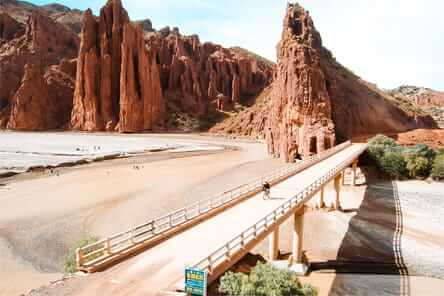

📜 Reseña Histórica
Toroyoj, también conocido como Toroyo, es un lugar rodeado de leyendas en el sur de Bolivia, cerca de Tupiza. Su nombre proviene de una historia local que habla de un misterioso toro de oro que apareció en el río San Juan del Oro. Muchos lugareños aseguraban oír sus bramidos incluso después de su desaparición.
Además de las leyendas, Toroyoj fue históricamente un paso importante entre comunidades rurales, especialmente antes de la construcción del puente. El cruce del río, en épocas de lluvia, era un gran reto por la corriente y el barro. En 1982, se construyó un puente gracias al Servicio Nacional de Caminos, lo que mejoró significativamente el tránsito y conectividad de la región.
🧭 Ubicación
Toroyoj se encuentra en las cercanías de la ciudad de Tupiza, en el departamento de Potosí, Bolivia. Está situado a orillas del río San Juan del Oro, en un recodo donde el río forma pequeños remansos naturales.
La zona presenta un entorno semiárido con paisajes rocosos y montañosos característicos de la región Sud de Chichas. Se puede llegar desde Tupiza por carretera o mediante rutas de senderismo. Gracias al puente construido, actualmente se puede acceder con más facilidad, tanto a pie como en vehículo.
🌄 Atractivos turísticos
Toroyoj destaca por su belleza natural y tranquilidad. Sus principales atractivos incluyen:
✅ Formaciones rocosas: acantilados y paisajes esculpidos por el viento y el agua.
✅ Balneario natural: en épocas cálidas, sus remansos invitan a nadar o descansar junto al río.
✅ Leyendas vivas: la historia del toro de oro sigue siendo parte del imaginario local.
✅ Fotografía de naturaleza: por su luz, colores de roca y vegetación típica del chaco andino.
✅ Ruta turística: Toroyoj es parte del circuito turístico de Tupiza, junto a lugares como El Sillar, Valle de los Machos y Puerta del Diablo.
📷 Galería
